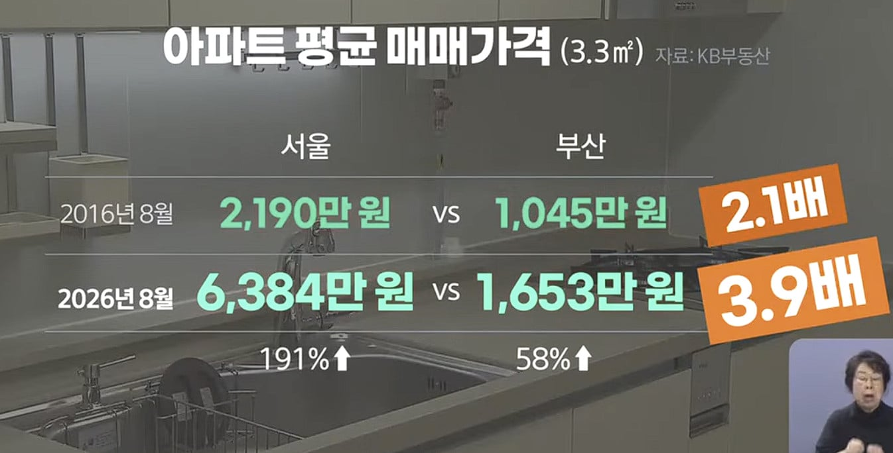

요약 : 부산 등 주택 시장 침체 지역을 별도로 지정해 다주택자 주택 수 산정 제외, 취득세·양도세 감면, 대출 규제 완화를 적용해 줄 것을 요청
K꽁꽁 언 부산 부동산…“‘침체지역’ 지정 지원해야
"지난 8월 말 기준 부산의 미분양 주택은 지난해보다 4백 가구 늘어난 약 7천6백 가구. 이 가운데 다 짓고도 팔리지 않은 이른바 '악성 미분양'은 3천 가구에 달합니다. 서울과의 아파트값 격차도 10년 전 2.1배에서 지금은 3.9배로 더 벌어졌습니다.
지역에는 이제 집을 살 사람도, 살 돈도 없다는 말이 나옵니다. 지역의 부동산 침체가 경기 탓만이 아니라 인구와 소득 기반이 무너진 구조적 위기라는 진단입니다.
이 때문에 수도권과 같은 규제를 적용하기보다, 지역 상황에 맞는 지원이 필요하다는 지적이 나옵니다."

...
....
멀쩡히 있던 공장 옆에 아파트 짓고 민원으로 밀어낼 때는 언제고...
??? : 뭘 해달라구요?
솔직히 부산에 일자리가 없다면서 떠나는 사람들이 원하는 일자리가 그런 공장 생산직 일자리가 아니라고 생각 함..
나름 지금 해양허브니 뭐니 한다고 한화랑 삼성이었나? R&D센터는 데려오고 하긴 했는데